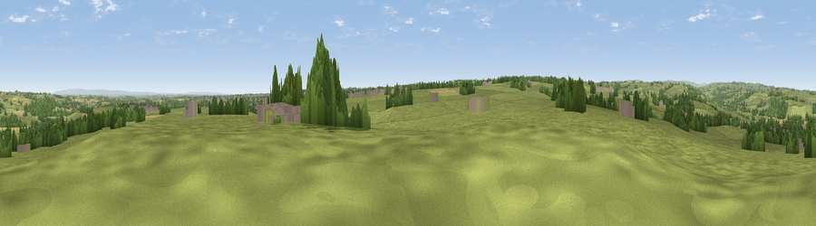

Viewpoint near Hampsthwaite
#18785 in England · top 28% of its area beats it · near HampsthwaiteWhere it is
The exact computed spot (SE 26325 57275). Click the marker for map links.
The view, rendered

A 360° render of this exact spot computed from the terrain model, tree cover and land cover — summer colours, afternoon light, calibrated against photographs of famous viewpoints. Real trees, hedges and buildings will differ in detail.
The panorama
Grey silhouette: terrain skyline in each direction (720 bearings, Earth curvature and refraction included). Dashed green: skyline with trees (+15 m) and buildings (+8 m) as obstacles. Blue strip: how far the ground is visible on each bearing.
Where the view opens
Wedge length = distance to the farthest visible ground on that bearing (vegetation-aware). Rings at 10, 25 and 50 km.
What fills the view
78% grassland · 12% woodland · 5% cropland · 4% built-up
Angular shares of the visible panorama (visual magnitude), not map area. Landscape diversity 0.32 (0–1 Shannon).
Key numbers
More beautiful places nearby
The staircase of upgrades: each row has a higher view potential than everything closer. Driving times are estimates from straight-line distance, calibrated against real road routing — check an actual route before setting out.
| Place | Direction | Drive | Score |
|---|---|---|---|
| Viewpoint near Braythorn | S · 6 km | ~13 min | 54.7 |
| Viewpoint near Timble | SW · 8 km | ~16 min | 68.1 |
| Viewpoint near Timble | SW · 8 km | ~17 min | 68.3 |
| How Hill | N · 10 km | ~19 min | 72.9 |
| Viewpoint near Otley | SSW · 14 km | ~26 min | 77.5 |
| Viewpoint near East Witton | NNW · 30 km | ~47 min | 77.8 |
| Hood Hill | NE · 34 km | ~52 min | 79.6 |
| Viewpoint near Kirby Knowle | NNE · 36 km | ~54 min | 80.5 |
54.01083, -1.59979 · source: screening · position refined by local search. Computed location — check access rights before visiting.